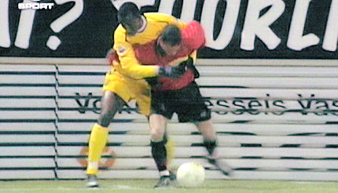

|
Helmond Sport - Roda JC (0-2) 31 januari 2005
|
Oper kopt een op maat gesneden hoekschop achter doelman Strijbosch,
0-1, (7').
Doelpuntenmaker Andres Oper.
Smeekes alleen voor Kujovic, maar de spits schiet hoog over.

Cissé, in duel met Blom, versiert een corner.
Een dieptepass van Lachambre wordt opgevangen door Bodor die de bal
naar Oper speelt.
Deze controleert de bal en schiet 0-2 binnen, (50').
Blijde supporters in het totaal uitverkochte gastenvak (400 plaatsen).
Saeijs, de van ADO Den Haag overgekomen verdediger, debuteerde bij
Roda JC. Hier is hij in duel met Smeekes.
Uitstekende kans voor Bridji, maar zijn schot wordt door Kah tot hoekschop
verwerkt.
Gevaarlijk moment wanneer Vangeffelen uit een vrije trap op de lat kopt.

Het blijft 0-2. Daarmee is de halve finale bereikt.
Kah heeft een speeltje gevonden.
© Koempels Pleasure Dome
|